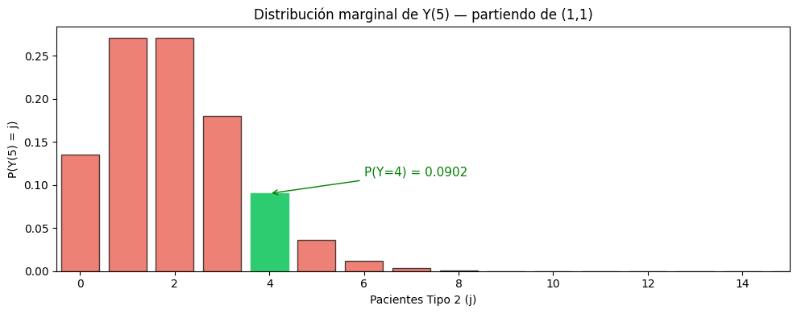
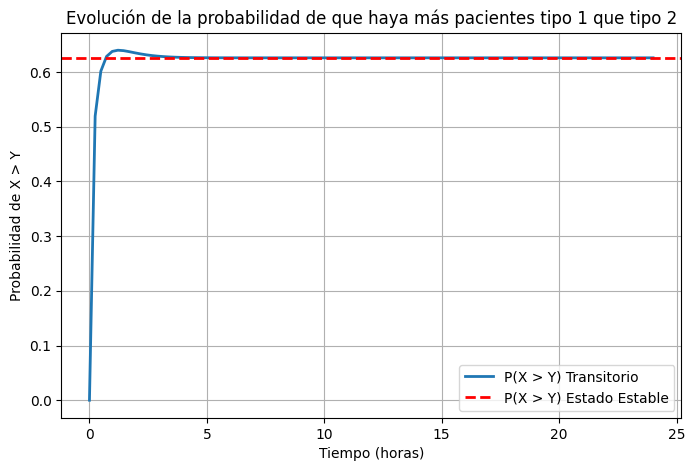

Complementaria Semana 9: Cadenas de Markov en Python II#
La semana pasada construiste la matriz generadora del hospital, creaste la cadena en jmarkov y viste cómo la distribución transitoria converge al estado estable. Esta semana el foco cambia: ya tenemos las distribuciones, ahora aprendemos a extraer de ellas respuestas a preguntas concretas.
Objetivos#
Al finalizar la sesión, el estudiante podrá:
Leer probabilidades de estados y de eventos a partir de una distribución conjunta.
Obtener probabilidades marginales a partir de una distribución transitoria conjunta.
Calcular medidas de una función del estado, como el valor esperado y la varianza del número total de pacientes.
Calcular probabilidades de eventos en estado estable y compararlas con su evolución transitoria.
Conocer dos medidas de otro tipo, el tiempo de primera pasada y el tiempo de ocupación, que se usarán en preguntas de mayor elaboración.
1. Recordatorio del modelo#
Continuamos con el hospital de la sesión anterior: \(B=20\) camas, dos tipos de pacientes y \(b=5\) camas reservadas para tipo 1.
El estado es \(Z(t)=(X(t),Y(t))\), donde \(X(t)\) y \(Y(t)\) representan el número de pacientes de cada tipo. El espacio de estados es
que tiene 216 estados válidos.
¿Por qué no \(21 \times 16 = 336\)? Si recorriéramos todas las combinaciones \(i \in \{0,\ldots,20\}\), \(j \in \{0,\ldots,15\}\), incluiríamos estados imposibles como \((20, 15)\): 35 pacientes en un hospital de 20 camas. La restricción \(i + j \le B\) los elimina. Por eso no usamos una fórmula aritmética del tipo
i * 16 + jpara indexar, sino un diccionario que solo contiene los estados válidos, igual que en la semana 8.
Matriz generadora:
A continuación, se implementa el modelo.
import numpy as np
import matplotlib.pyplot as plt
from jmarkov.ctmc import ctmc
# Parámetros del modelo
B = 20 # capacidad total del hospital (camas)
b = 5 # camas reservadas para pacientes tipo 1
lambda_1 = 6.5 # tasa de llegada tipo 1 (pacientes/hora)
lambda_2 = 3 # tasa de llegada tipo 2 (pacientes/hora)
mu_1 = 2 # tasa de servicio tipo 1 (pacientes/hora)
mu_2 = 1.5 # tasa de servicio tipo 2 (pacientes/hora)
# Espacio de estados: solo los pares (i, j) válidos
estados = []
for i in range(B + 1):
for j in range(B - b + 1):
if i + j <= B:
estados.append((i, j))
num_estados = len(estados)
# Diccionario: par (i, j) -> índice entero en los vectores de probabilidad
mapa_indices = {estado: idx for idx, estado in enumerate(estados)}
def index(i, j):
# Devuelve el índice entero del estado (i, j). Falla si el estado no es válido.
return mapa_indices[(i, j)]
print(f"Tamaño del espacio de estados: {num_estados} pares válidos")
Tamaño del espacio de estados: 216 pares válidos
# Construcción de la matriz generadora Q
Q_hospital = np.zeros((num_estados, num_estados))
for (i, j) in estados:
idx = index(i, j)
# Llegada de paciente tipo 1: hay cama disponible
if i + j < B:
Q_hospital[idx, index(i + 1, j)] = lambda_1
# Llegada de paciente tipo 2: hay cama disponible y no se supera B - b
if (i + j < B) and (j < B - b):
Q_hospital[idx, index(i, j + 1)] = lambda_2
# Salida de paciente tipo 1 (tasa proporcional al número actual)
if i > 0:
Q_hospital[idx, index(i - 1, j)] = i * mu_1
# Salida de paciente tipo 2 (tasa proporcional al número actual)
if j > 0:
Q_hospital[idx, index(i, j - 1)] = j * mu_2
# Diagonal: la fila debe sumar cero
Q_hospital[idx, idx] = -Q_hospital[idx].sum()
print("¿Todas las filas suman cero?:", np.allclose(Q_hospital.sum(axis=1), 0))
print(f"Dimensión de Q: {Q_hospital.shape}")
# Crear la cadena y verificar propiedades
hospital_chain = ctmc(Q_hospital)
print(f"¿Es irreducible?: {hospital_chain.is_irreducible()}")
print(f"¿Es ergódica?: {hospital_chain.is_ergodic()}")
¿Todas las filas suman cero?: True
Dimensión de Q: (216, 216)
¿Es irreducible?: True
¿Es ergódica?: True
# Funciones auxiliares que usaremos en toda la sesión
def vector_a_matriz(pi_vec):
# Convierte el vector de probabilidades en una matriz (i, j). Los estados imposibles quedan en 0.
M = np.zeros((B + 1, B - b + 1))
for (i, j) in estados:
M[i, j] = pi_vec[index(i, j)]
return M
def plot_heatmap(pi_mat, titulo, ax, max_i=10, max_j=10):
region = pi_mat[:max_i, :max_j]
im = ax.imshow(region.T, origin='lower', aspect='auto', cmap='YlOrRd')
ax.set_xlabel('Pacientes Tipo 1 (i)')
ax.set_ylabel('Pacientes Tipo 2 (j)')
ax.set_title(titulo)
plt.colorbar(im, ax=ax, shrink=0.8)
for i in range(min(8, max_i)):
for j in range(min(8, max_j)):
val = region[i, j]
if val > 0.004:
ax.text(i, j, f'{val:.3f}', ha='center', va='center', fontsize=6,
color='white' if val > 0.02 else 'black')
return im
Regla práctica para toda la sesión: cuando sumes probabilidades, recorre la lista
estados(for (i, j) in estados) en lugar de dos ciclos independientes sobre \(i\) y \(j\). Así nunca tocas un estado imposible.
1.1 Repaso: ¿qué hay dentro de \(\pi(t)\)?#
El vector que devuelve transient_probabilities (o steady_state) tiene una entrada por estado. Casi todas las preguntas de esta sesión se reducen a una de estas dos operaciones:
Pregunta |
Operación |
|---|---|
Probabilidad de un estado, \(P(X(t)=i,\,Y(t)=j)\) |
leer una entrada: |
Probabilidad de un evento \(A\) (un conjunto de estados) |
sumar las entradas de los estados de \(A\) |
Por ejemplo, con el hospital vacío al inicio y \(t = 6\) horas:
alpha_vacio = np.zeros(num_estados)
alpha_vacio[index(0, 0)] = 1
pi_6h = hospital_chain.transient_probabilities(t=6, alpha=alpha_vacio)
# Un estado: exactamente 1 paciente tipo 1 y 3 tipo 2
print(f"P(X(6)=1, Y(6)=3) = {pi_6h[index(1, 3)]:.6f}")
# Un evento: al menos 10 camas ocupadas
p_10_mas = 0
for (i, j) in estados:
if i + j >= 10:
p_10_mas += pi_6h[index(i, j)]
print(f"P(X(6)+Y(6) >= 10) = {p_10_mas:.6f}")
P(X(6)=1, Y(6)=3) = 0.022737
P(X(6)+Y(6) >= 10) = 0.041814
2. De una distribución conjunta a una marginal#
Pregunta 1: Dado que el hospital inicia en \((1,1)\) ¿Cuál es la probabilidad de tener exactamente 4 pacientes Tipo 2 después de 5 horas?#
No se especifica el número de pacientes Tipo 1, por lo que hay que considerar todos los valores posibles de \(X(5)\):
Esta es la idea de una distribución marginal.
# definir el vector de probabilidades iniciales alpha
alpha = np.zeros(num_estados)
alpha[index(1,1)] = 1
alpha
array([0., 0., 0., 0., 0., 0., 0., 0., 0., 0., 0., 0., 0., 0., 0., 0., 0.,
1., 0., 0., 0., 0., 0., 0., 0., 0., 0., 0., 0., 0., 0., 0., 0., 0.,
0., 0., 0., 0., 0., 0., 0., 0., 0., 0., 0., 0., 0., 0., 0., 0., 0.,
0., 0., 0., 0., 0., 0., 0., 0., 0., 0., 0., 0., 0., 0., 0., 0., 0.,
0., 0., 0., 0., 0., 0., 0., 0., 0., 0., 0., 0., 0., 0., 0., 0., 0.,
0., 0., 0., 0., 0., 0., 0., 0., 0., 0., 0., 0., 0., 0., 0., 0., 0.,
0., 0., 0., 0., 0., 0., 0., 0., 0., 0., 0., 0., 0., 0., 0., 0., 0.,
0., 0., 0., 0., 0., 0., 0., 0., 0., 0., 0., 0., 0., 0., 0., 0., 0.,
0., 0., 0., 0., 0., 0., 0., 0., 0., 0., 0., 0., 0., 0., 0., 0., 0.,
0., 0., 0., 0., 0., 0., 0., 0., 0., 0., 0., 0., 0., 0., 0., 0., 0.,
0., 0., 0., 0., 0., 0., 0., 0., 0., 0., 0., 0., 0., 0., 0., 0., 0.,
0., 0., 0., 0., 0., 0., 0., 0., 0., 0., 0., 0., 0., 0., 0., 0., 0.,
0., 0., 0., 0., 0., 0., 0., 0., 0., 0., 0., 0.])
# Calcular las probabilidades transitorias a las 5 horas partiendo de alpha
probs_transitorias_5h = hospital_chain.transient_probabilities(t=5, alpha=alpha)
probs_transitorias_5h
array([5.25095793e-03, 1.04990133e-02, 1.04961107e-02, 6.99547210e-03,
3.49676853e-03, 1.39832040e-03, 4.65977800e-04, 1.33099657e-04,
3.32656999e-05, 7.39033018e-06, 1.47765654e-06, 2.68590382e-07,
4.47526642e-08, 6.88312378e-09, 9.83036913e-10, 1.31040502e-10,
1.70650769e-02, 3.41207207e-02, 3.41112877e-02, 2.27345698e-02,
1.13641406e-02, 4.54439849e-03, 1.51438025e-03, 4.32560290e-04,
1.08110127e-04, 2.40178184e-05, 4.80223289e-06, 8.72891331e-07,
1.45441595e-07, 2.23694514e-08, 3.19477011e-09, 4.25868361e-10,
2.77298784e-02, 5.54444286e-02, 5.54291004e-02, 3.69425148e-02,
1.84661480e-02, 7.38441546e-03, 2.46079058e-03, 7.02888383e-04,
1.75673437e-04, 3.90277288e-05, 7.80338338e-06, 1.41840390e-06,
2.36335187e-07, 3.63492234e-08, 5.19134028e-09, 6.92014762e-10,
3.00397575e-02, 6.00629099e-02, 6.00463049e-02, 4.00197999e-02,
2.00043650e-02, 7.99953201e-03, 2.66577268e-03, 7.61438488e-04,
1.90306911e-04, 4.22787116e-05, 8.45340002e-06, 1.53655608e-06,
2.56021794e-07, 3.93771064e-08, 5.62378065e-09, 7.49660247e-10,
2.44065358e-02, 4.87995805e-02, 4.87860894e-02, 3.25150655e-02,
1.62530357e-02, 6.49941550e-03, 2.16587224e-03, 6.18649333e-04,
1.54619508e-04, 3.43503750e-05, 6.86817226e-06, 1.24841284e-06,
2.08011274e-07, 3.19929324e-08, 4.56919055e-09, 6.09082322e-10,
1.58637497e-02, 3.17187304e-02, 3.17099614e-02, 2.11341284e-02,
1.05641412e-02, 4.22448732e-03, 1.40777272e-03, 4.02109435e-04,
1.00499525e-04, 2.23270438e-05, 4.46417252e-06, 8.11443234e-07,
1.35203252e-07, 2.07948239e-08, 2.96990615e-09, 3.95895661e-10,
8.59259434e-03, 1.71804390e-02, 1.71756893e-02, 1.14472931e-02,
5.72206333e-03, 2.28819206e-03, 7.62519604e-04, 2.17802439e-04,
5.44355359e-05, 1.20934374e-05, 2.41801855e-06, 4.39518482e-07,
7.32330513e-08, 1.12636266e-08, 1.60869979e-09, 3.98929342e-03,
7.97638169e-03, 7.97417655e-03, 5.31464762e-03, 2.65658878e-03,
1.06234151e-03, 3.54015842e-04, 1.01119389e-04, 2.52728514e-05,
5.61463613e-06, 1.12261750e-06, 2.04056432e-07, 3.40003423e-08,
5.22954785e-09, 1.62059951e-03, 3.24030322e-03, 3.23940742e-03,
2.15900775e-03, 1.07920528e-03, 4.31562685e-04, 1.43814424e-04,
4.10784668e-05, 1.02667772e-05, 2.28087675e-06, 4.56050506e-07,
8.28961531e-08, 1.38126525e-08, 5.85198099e-04, 1.17007272e-03,
1.16974925e-03, 7.79617191e-04, 3.89700779e-04, 1.55837191e-04,
5.19313612e-05, 1.48334299e-05, 3.70733464e-06, 8.23626609e-07,
1.64681336e-07, 2.99347373e-08, 1.90183405e-04, 3.80261684e-04,
3.80156561e-04, 2.53367628e-04, 1.26648779e-04, 5.06455014e-05,
1.68771676e-05, 4.82071791e-06, 1.20484947e-06, 2.67672769e-07,
5.35214363e-08, 5.61887855e-05, 1.12346513e-04, 1.12315456e-04,
7.48562678e-05, 3.74177854e-05, 1.49629780e-05, 4.98628374e-06,
1.42426230e-06, 3.55970336e-07, 7.90851032e-08, 1.52173179e-05,
3.04262246e-05, 3.04178143e-05, 2.02729374e-05, 1.01336680e-05,
4.05234933e-06, 1.35041307e-06, 3.85729026e-07, 9.64085488e-08,
3.80420995e-06, 7.60631735e-06, 7.60421528e-06, 5.06807642e-06,
2.53333944e-06, 1.01305813e-06, 3.37595584e-07, 9.64321304e-08,
8.83092436e-07, 1.76569689e-06, 1.76520922e-06, 1.17648167e-06,
5.88079635e-07, 2.35168798e-07, 7.83702676e-08, 1.91330696e-07,
3.82555725e-07, 3.82450254e-07, 2.54896958e-07, 1.27414293e-07,
5.09531300e-08, 3.88628344e-08, 7.77042425e-08, 7.76829438e-08,
5.17747294e-08, 2.58809621e-08, 7.42943081e-09, 1.48547885e-08,
1.48507993e-08, 9.89808081e-09, 1.34138567e-09, 2.68205049e-09,
2.68138535e-09, 2.29442019e-10, 4.58770089e-10, 3.72841757e-11])
# Probabilidad para j = 4
prob_tipo2_4 = 0
for (i, j) in estados:
if j == 4:
prob_tipo2_4 += probs_transitorias_5h[index(i, j)] # sumo todas las combinaciones de i válidas para j=4
print(f"Probabilidad de que haya 4 pacientes tipo 2 luego de 5 horas: {prob_tipo2_4:.6f}")
Probabilidad de que haya 4 pacientes tipo 2 luego de 5 horas: 0.090174
# Calcular la distribución marginal completa de Y(5): para cada j, sumar sobre todos los i válidos
prob_marg_tipo2 = np.zeros(B - b + 1)
print(f"Tamaño de prob_marg_tipo2: {prob_marg_tipo2.shape}")
for (i, j) in estados:
prob_marg_tipo2[j] += probs_transitorias_5h[index(i, j)]
print(f"Verificación: la marginal suma {prob_marg_tipo2.sum():.6f}")
Tamaño de prob_marg_tipo2: (16,)
Verificación: la marginal suma 1.000000
Visualización rápida#
La marginal permite ver cómo se distribuye \(Y(5)\) y ubicar la probabilidad de interés.
# Visualizar la marginal completa de Y
fig, ax = plt.subplots(figsize=(10, 4))
bars = ax.bar(range(B - b + 1), prob_marg_tipo2, color='#e74c3c', edgecolor='black', alpha=0.7)
bars[4].set_color('#2ecc71') # Resaltar j=4
bars[4].set_alpha(1.0)
ax.set_xlabel('Pacientes Tipo 2 (j)')
ax.set_ylabel('P(Y(5) = j)')
ax.set_title('Distribución marginal de Y(5) — partiendo de (1,1)')
ax.set_xlim(-0.5, B - b)
ax.annotate(f'P(Y=4) = {prob_marg_tipo2[4]:.4f}', xy=(4, prob_marg_tipo2[4]), xytext=(6, prob_marg_tipo2[4] + 0.02),
arrowprops=dict(arrowstyle='->', color='green'), fontsize=11, color='green')
plt.tight_layout()
plt.show()

3. Funciones del estado: valor esperado y varianza#
Ahora definimos una nueva variable:
el número total de pacientes.
A partir de la distribución conjunta podemos calcular:
La idea importante es que no necesitamos construir una nueva CMTC para estudiar \(T\): podemos obtener sus medidas directamente a partir de la distribución de \((X,Y)\).
Pregunta 2: Calcule el valor esperado y la varianza del número total de pacientes en el hospital tras 2 horas y 6 horas, dado que al inicio está vacío. Compare los resultados.#
# Probabilidades transitorias en 2 y 6 horas (partiendo del hospital vacío)
probs_transitorias_2h = hospital_chain.transient_probabilities(t=2, alpha=alpha_vacio)
probs_transitorias_6h = hospital_chain.transient_probabilities(t=6, alpha=alpha_vacio)
# Probabilidades transitorias a las 2 horas
print("Probabilidades transitorias a las 2 horas (partiendo del hospital vacío):")
# Calcular E[T(2)] y E[T(2)^2]
e_t_2 = 0
e_t_2_squared = 0
for (i, j) in estados:
e_t_2 += (i + j) * probs_transitorias_2h[index(i, j)]
e_t_2_squared += ((i + j) ** 2) * probs_transitorias_2h[index(i, j)]
print(f"E[T(2)] = {e_t_2:.4f}")
# Calcular Var[T(2)]
var_t_2 = e_t_2_squared - (e_t_2 ** 2)
print(f"Var[T(2)] = {var_t_2:.4f}")
# ------------------------------------------------------------------------------------
# Probabilidades transitorias a las 6 horas
print("\nProbabilidades transitorias a las 6 horas (partiendo del hospital vacío):")
# Calcular E[T(6)] y E[T(6)^2]
e_t_6 = 0
e_t_6_squared = 0
for (i, j) in estados:
e_t_6 += (i + j) * probs_transitorias_6h[index(i, j)]
e_t_6_squared += ((i + j) ** 2) * probs_transitorias_6h[index(i, j)]
print(f"E[T(6)] = {e_t_6:.4f}")
# Calcular Var[T(6)]
var_t_6 = e_t_6_squared - (e_t_6 ** 2)
print(f"Var[T(6)] = {var_t_6:.4f}")
Probabilidades transitorias a las 2 horas (partiendo del hospital vacío):
E[T(2)] = 5.0909
Var[T(2)] = 5.0909
Probabilidades transitorias a las 6 horas (partiendo del hospital vacío):
E[T(6)] = 5.2497
Var[T(6)] = 5.2497
Solución alterna:#
# Podríamos definir una función para calcular E[T] y Var[T], con T = X + Y, dada una distribución de probabilidad
def momentos_total(probs):
esperanza = sum((i + j) * probs[index(i, j)] for (i, j) in estados)
esperanza_cuadrado = sum((i + j) ** 2 * probs[index(i, j)] for (i, j) in estados)
varianza = esperanza_cuadrado - esperanza ** 2
return esperanza, varianza
# Y usarla de manera más compacta para los dos casos
E_2h, var_2h = momentos_total(probs_transitorias_2h)
E_6h, var_6h = momentos_total(probs_transitorias_6h)
print(f"Tras 2 horas: E[T] = {E_2h:.3f} Var[T] = {var_2h:.3f}")
print(f"Tras 6 horas: E[T] = {E_6h:.3f} Var[T] = {var_6h:.3f}")
Tras 2 horas: E[T] = 5.091 Var[T] = 5.091
Tras 6 horas: E[T] = 5.250 Var[T] = 5.250
Para pensar: ¿por qué cambian tan poco los resultados entre 2 y 6 horas? Recuerda lo que viste en la semana 8 con los mapas de calor: ¿en qué momento el hospital ya está prácticamente en estado estable?
4. Estado estable vs. comportamiento transitorio#
En estado estable, la distribución satisface
Por ejemplo, podemos preguntar por la probabilidad del evento “hay más pacientes tipo 1 que tipo 2”:
Después podemos comparar ese valor con \(P(X(t)>Y(t))\) a lo largo del tiempo. Esta comparación permite visualizar la diferencia entre transitorio y largo plazo.
Pregunta 3: Calcule la probabilidad de que haya más pacientes tipo 1 que tipo 2 a largo plazo.#
# Definir el vector de probabilidades en estado estable
pi_estable = hospital_chain.steady_state()
# Calcular la probabilidad de que haya más pacientes tipo 1 que tipo 2 en estado estable
prob_mas_1_estable = 0
for (i, j) in estados:
if i > j:
prob_mas_1_estable += pi_estable[index(i, j)]
# Forma alternativa:
# prob_mas_1_estable = sum(pi_estable[index(i, j)] for (i, j) in estados if i > j)
print(f"Probabilidad de que haya más pacientes tipo 1 que tipo 2 en estado estable: {prob_mas_1_estable:.6f}")
Probabilidad de que haya más pacientes tipo 1 que tipo 2 en estado estable: 0.625781
Pregunta 4: Genere una gráfica de la probabilidad de que haya más pacientes tipo 1 que tipo 2 en función del tiempo, desde 0 hasta 24 horas. Compare con el valor obtenido en el punto anterior.#
puntos_de_tiempo = np.linspace(0, 24, 100)
probabilidad_mas_tipo_1 = []
for t in puntos_de_tiempo:
probs_t = hospital_chain.transient_probabilities(t=t, alpha=alpha_vacio)
prob_mas_1 = sum(probs_t[index(i, j)] for (i, j) in estados if i > j)
probabilidad_mas_tipo_1.append(prob_mas_1)
plt.figure(figsize=(8, 5))
plt.plot(puntos_de_tiempo, probabilidad_mas_tipo_1, label="P(X > Y) Transitorio", linewidth=2)
plt.axhline(y=prob_mas_1_estable, color='r', linestyle='--', label="P(X > Y) Estado Estable", linewidth=2)
plt.xlabel("Tiempo (horas)")
plt.ylabel("Probabilidad de X > Y")
plt.title("Evolución de la probabilidad de que haya más pacientes tipo 1 que tipo 2")
plt.legend()
plt.grid(True)
plt.show()

5. Dos medidas de otro tipo: ¿cuánto tarda? y ¿cuánto tiempo pasa?#
Hasta ahora todas las preguntas fueron del tipo “¿qué tan probable es algo en el instante \(t\) (o en el largo plazo)?”. Hay dos medidas que responden preguntas distintas y que usarás en las preguntas de mayor elaboración. Aquí solo las presentamos con un ejemplo cada una; en la Guía de referencia (sección 6) de la complementaria de la semana 8 tienes más detalle.
5.1 Tiempo de primera pasada#
¿Cuánto tiempo pasa, en promedio, hasta que el sistema llega por primera vez a un estado objetivo?
En jmarkov se calcula con first_passage_time(target)[inicial]:
targetes el índice del estado al que se quiere llegar;la función devuelve un array donde cada elemento corresponde a un posible estado inicial;
sobre ese array se toma la posición del estado inicial que nos interesa,
[inicial].
Como nuestros estados son pares \((i,j)\), usamos index(i, j) para obtener tanto target como inicial.
Ejemplo: partiendo del hospital vacío, ¿cuánto tarda en promedio en llegar por primera vez al estado \((5,5)\)? ¿Y al estado \((15,5)\), que es uno de los estados con el hospital lleno? Es decir, buscamos \(m_{(0,0),(5,5)}\) y \(m_{(0,0),(15,5)}\).
m_00_55 = hospital_chain.first_passage_time(index(5, 5))[index(0, 0)]
m_00_155 = hospital_chain.first_passage_time(index(15, 5))[index(0, 0)]
print(f"Tiempo promedio de (0, 0) a (5, 5): {m_00_55[0]:,.1f} horas")
print(f"Tiempo promedio de (0, 0) a (15, 5): {m_00_155[0]:,.1f} horas")
Tiempo promedio de (0, 0) a (5, 5): 17.6 horas
Tiempo promedio de (0, 0) a (15, 5): 623,064.6 horas
Fíjate en la diferencia de escala: el hospital alcanza el estado estable en unas pocas horas y llega a \((5,5)\) en menos de un día, pero un estado con el hospital lleno como \((15,5)\) es tan raro que, en promedio, tarda más de 600 000 horas (unos 70 años) en visitarse por primera vez. Converger rápido al estado estable no significa visitar rápido todos los estados.
5.2 Tiempo de ocupación#
Durante un horizonte \([0, T]\), ¿cuánto tiempo pasa el sistema, en promedio, en cada estado? Se obtiene acumulando las probabilidades transitorias en el tiempo:
occupation_time(T) devuelve una matriz donde la fila es el estado de origen y la columna el estado donde se mide el tiempo. Para un conjunto de estados, se suman las columnas correspondientes.
Ejemplo: en las primeras 8 horas de operación, partiendo del hospital vacío, ¿cuántas horas en promedio hay al menos 8 camas ocupadas?
T_horizonte = 8
ocupacion = hospital_chain.occupation_time(T=T_horizonte)
fila_vacio = ocupacion[index(0, 0)] # tiempos partiendo del hospital vacío
print(f"Verificación: la fila suma {fila_vacio.sum():.4f} (debe ser {T_horizonte})")
horas_8_mas = sum(fila_vacio[index(i, j)] for (i, j) in estados if i + j >= 8)
print(f"Horas esperadas con al menos 8 camas ocupadas en [0, {T_horizonte}]: {horas_8_mas:.3f}")
Verificación: la fila suma 8.0000 (debe ser 8)
Horas esperadas con al menos 8 camas ocupadas en [0, 8]: 1.094
Cierre de la complementaria#
Hasta aquí hemos visto las operaciones fundamentales para extraer información de una CMTC:
Leer la probabilidad de un estado o de un evento a partir de \(\pi(t)\) o \(\pi\).
Marginalizar una distribución conjunta.
Calcular medidas de una función del estado (valor esperado y varianza de \(X+Y\)).
Calcular la probabilidad de un evento en estado estable y compararla con su evolución transitoria.
Medir tiempos: cuánto tarda el sistema en llegar a un estado (primera pasada) y cuánto tiempo pasa en él durante un horizonte (ocupación).
En todos los casos el patrón es el mismo: traducir la pregunta a un conjunto de estados y recorrer estados sumando lo que corresponda.
El resto de la sesión se dedica a aplicar estas ideas en preguntas que requieren mayor elaboración.
Universidad de los Andes | Vigilada Mineducación. Reconocimiento como Universidad: Decreto 1297 del 30 de mayo de 1964. Reconocimiento personería jurídica: Resolución 28 del 23 de febrero de 1949 Minjusticia. Departamento de Ingeniería Industrial Carrera 1 Este No. 19 A 40 Bogotá, Colombia Tel. (57.1) 3324320 | (57.1) 3394949 Ext. 2880 /2881 http://industrial.uniandes.edu.co